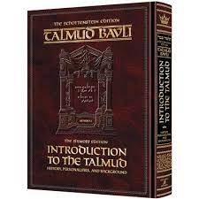
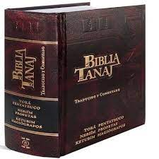
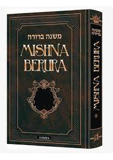

Tienen 3 libros importantes: Él Tanaj, él Talmud y él Mishna. Él Tanaj es lo llamado Antiguo Testamento por los cristianos y son varios libros (incluyendo la torá). Mishná son las tradiciones orales que se recopilaron por él rabino Yehuda Hanasi en él siglo II. Se los había dado Dios a Abraham originariamente y desde allí se pasaron de generación en generación hasta ese momento. Él Talmud son interpretaciones y comentarios. Él Shulján Aruj es una compilación de toda la Halajá. Finalmente, él Mishné Torá es él Código de leyes judías
El Talmud
El tanaj
La Mishna
Tienen muchas Fiestas Importantes (en él Calendario Judio):
Su lugar de reunión es la sinagoga, un lugar donde la gente va a rezar, estudiar, reunirse, discutir e interpretar la Torá, está presidida por un rabino que es él que la organiza.
Hay dos maneras de ser judío, por nacimiento y por un rito. Depende la rama de que es necesario. A veces es hijo de un judio, otras de una judía (que yo sepa es generalmente así). Hay al menos dos rituales distintos de dos ramas distitnas.Uno puede ser del pueblo judio pero no religioso. Uno puede ser judío y cristiano al mismo tiempo. Él tema es que uno pierde derecos de religion al separarse de la religion, como no poder ser enterrado en un cementerio judío, etc. Ellos tienen muchas tradiciones, por ejemplo la ropa, él kipá, la carne especial, es muy complejo y depende de la rama, hay algunos que son ultraortodoxos y otros más relajados.

Hombre haciendo el ritual de conversion